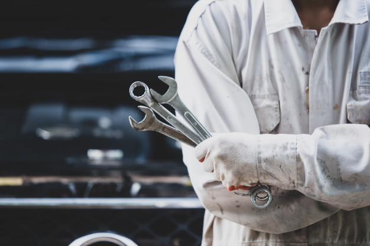

Мы заботимся о вашем автомобиле

Все для вашего авто

Мы работаем, чтобы ваши автомобили жили!

О нас
На станции производится диагностика и ремонт автомобилей зарубежного и отечественного производства. Мы рады предложить Вам следующие услуги: Диагностика систем питания и зажигания двигателя; Ремонт двигателя, Ремонт ходовой части; Замена масла в двигателе и КПП; Шиномонтаж легковой; Кузовной ремонт с покраской элементов; Комплекс услуг автомойки. Мы можем произвести полную предпродажную диагностику автомобиля с составлением акта дефектовки. Также наша станция оказывает услуги по техническому осмотру автотранспорта, с выдачей документов, необходимых для оформления полиса ОСАГО. Наша цель – сделать ваш автомобиль максимально надёжным, а его вождение удобным и безопасным. Достичь этой цели нам помогают три составляющие:
Квалифицированный опытный персонал. Наши автомеханики зарекомендовали себя как высококлассные специалисты, у каждого из них имеются постоянные клиенты, авто которых они обслуживают не один год.
Современное фирменное оборудование и оснастка. Руководство СТО стремится оснастить автосервис и зоны ожидания для клиентов по последнему слову техники, чтобы обеспечить высокую точность и качество ремонта современных автомобилей, а также сделать ожидание клиента комфортным и неутомительным.
Технологии сегодняшнего дня. Наши специалисты постоянно "прокачивают" свои навыки, осваивают новые инструменты и методики работы, благодаря чему сокращается время на диагностику и ремонт автомобиля.
Надёжность
Это опытные механики. Опытные механики, которые прошли специальную подготовку. И знают, как правильно ремонтировать и обслуживать автомобили. Это уменьшает вероятность ошибок и повышает качество работы. Профессиональное оборудование. Используется современное оборудование и инструменты, необходимые для выполнения различных ремонтных работ. Это позволяет механикам быстро и эффективно диагностировать проблемы с автомобилем. Гарантия на ремонт. СТО Предоставляет гарантию на свою работу. Это означает, что, если что-то пойдет не так после ремонта, механики будут исправлять проблему бесплатно. Качественные запчасти. Автосервис использует только качественные запчасти, что гарантирует долговечность и надежность ремонта. Это позволяет автомобилю оставаться в хорошем состоянии на долгое время. Безопасность. Ремонт автомобиля, выполненный профессионалами, обеспечивает безопасность водителя и пассажиров. Некачественный ремонт может привести к серьезным авариям. Которые могут стать причиной ущерба для здоровья и имущества.